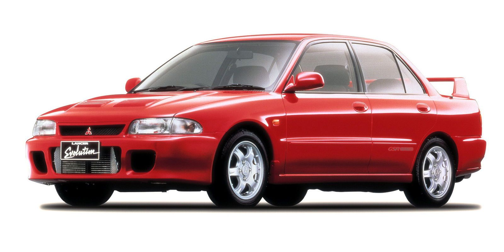
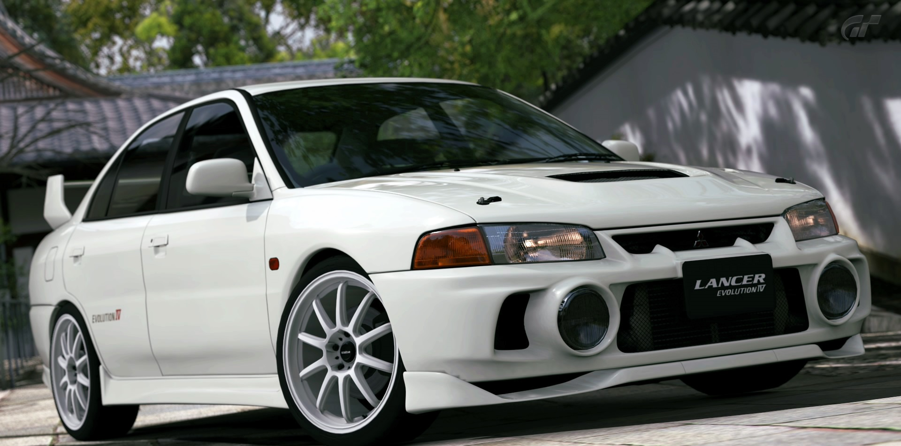
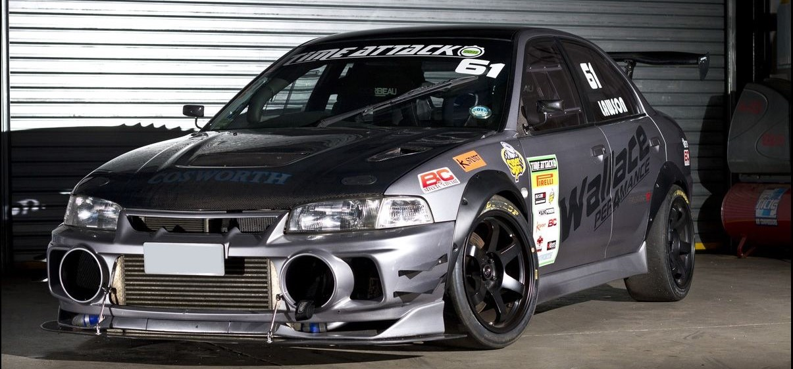

Mitsubishi Lancer Evolution IV
Mitsubishi Lancer Evolution, или Mitsubishi Lancer Evo — спортивный вариант Mitsubishi Lancer, производившийся с 1992 по 2015 год. Выполнен в кузове седан (IX поколение выпускалось также с кузовом универсал). Внешне отличается от стандартного Lancer бампером, капотом, спойлером, расширенными крыльями. Имеет более мощный турбированный двигатель (до 10-го поколения ставился 4G63), более жесткий кузов, полный привод, механическую, автоматическую или роботизированную КПП с двумя сцеплениями. Автоматические коробки передач ставились на Evolution 7 GT-A и Evolution 9 универсал, роботизированная КПП ставится на Evolution 10. Первое поколение:
Evolution IV
В 1996 году была полностью изменена платформа Lancer, а вместе с ней и Evolution. Двигатель и трансмиссия были повернуты на 180° для лучшего баланса веса и ликвидации закрученной управляемости. Существовали две версии — RS и GSR. Версия RS была выпущена в виде конкурсный автомобиль с самоблокирующимся передним дифференциалом и фрикционным, типа LSD, сзади. В версии GSR впервые была применена система активного заднего дифференциала AYC, который существенно повысил управляемость автомобиля на высоких скоростях и в экстремальных режимах. Также были добавлены сидения Recaro и выбор между легким гоночными колесами OZ размером 15 или 16. В GSR и RS были новые двойные турбокомпрессоры, которые помогли увеличить мощность до 276 л. с. (206 кВт) при 6500 об/мин и крутящий момент до 330 Н·м при 4000 об/мин. Среди изменений экстерьера Evolution IV выделяются две большие противотуманные фары на переднем бампере (опционально в версии RS) и новый дизайн задних габаритных огней. Новое поколение стало немного тяжелее, чем предыдущие Evolution — GSR, в частности, в связи с дополнительными техническими системами. Также изменили полный привод, который теперь мог переносить больше крутящего момента на более загруженное колесо, в связи с чем его было очень сложно пустить в занос. Рестайлинг и тюнинг:
Evolution IV рестайлинг:
